මේ app එකෙන් ඔයාට මාසයක salary එක enter කරල, ඒකෙන් කොච්චර වියදම් වුණාද, කොච්චර ඉතුරුද කියලා ඉතා පහසුවෙන් බලාගන්න පුලුවන්. දැනටමත් වියදම් plan කරන්න අත්දැකීමක් නැතිවුණත් කමක් නෑ, පියවරෙන් පියවර මෙතන තියෙනවා.
App එක open කරපු ගමන් Continue with Google බටන් එක එනවා. ඒක click කරාම ඔයාගේ Gmail account එක තෝරන්න පුලුවන්.
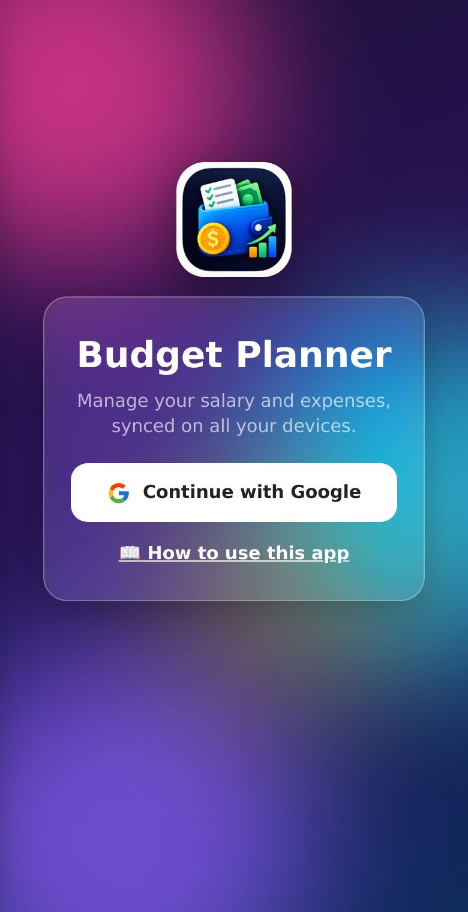
Login වුණාම අවුරුද්දේ මාස 12 පෙනෙනවා. හැම මාසයකම Salary, Spent (වියදම්) සහ Left (ඉතුරු) ගාන පොඩි බාර් එකක් එක්ක පෙන්නනවා. යන්න ඕන මාසය click කරාම ඒ මාසයේ දත්ත open වෙනවා.
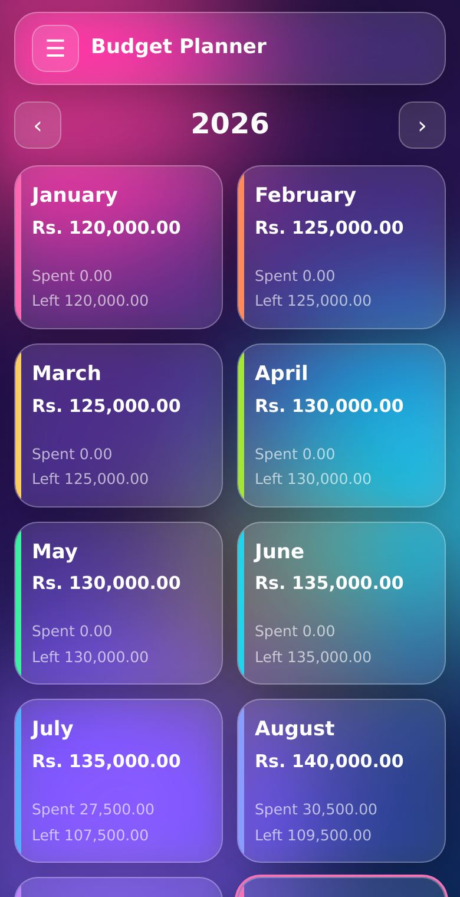
තෝරපු මාසයේ මුලින්ම කරන්න ඕන ඒ මාසයේ salary එක ලියන එකයි.
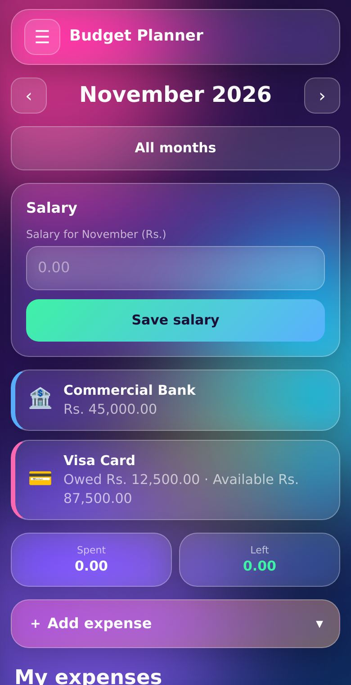
＋ Add expense click කරාම form එක open වෙනවා.
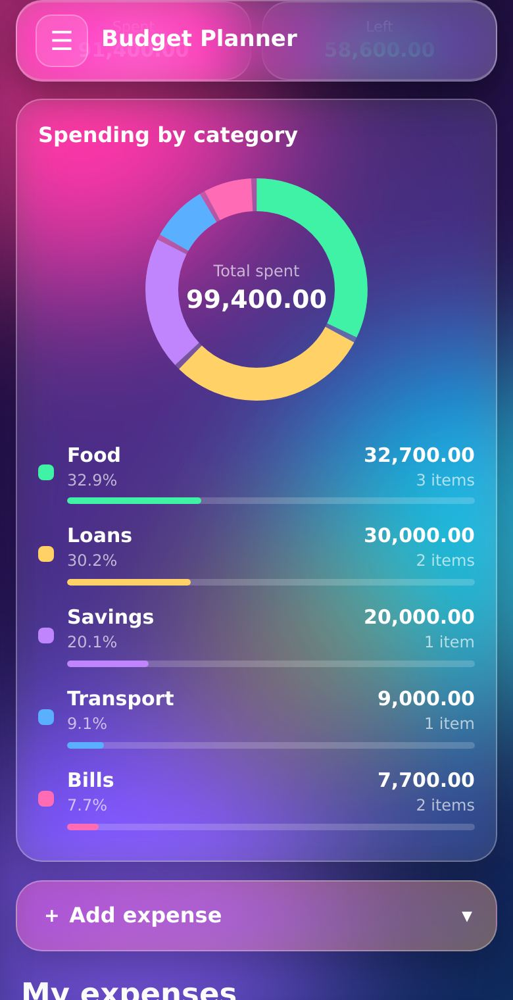
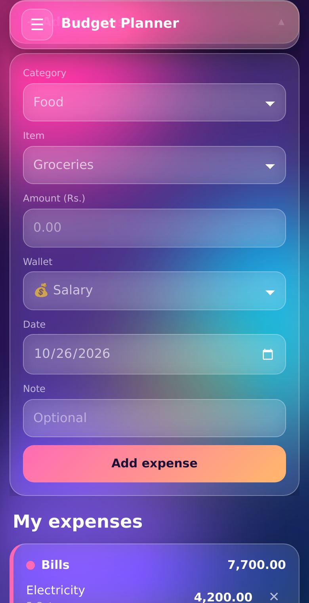
දාපු හැම වියදමක්ම category එකක් අනුව වෙන වෙනම card වලින් පෙනෙනවා. හැම card එකකම උඩ ඒ category එකේ මුළු ගාන තියෙනවා.
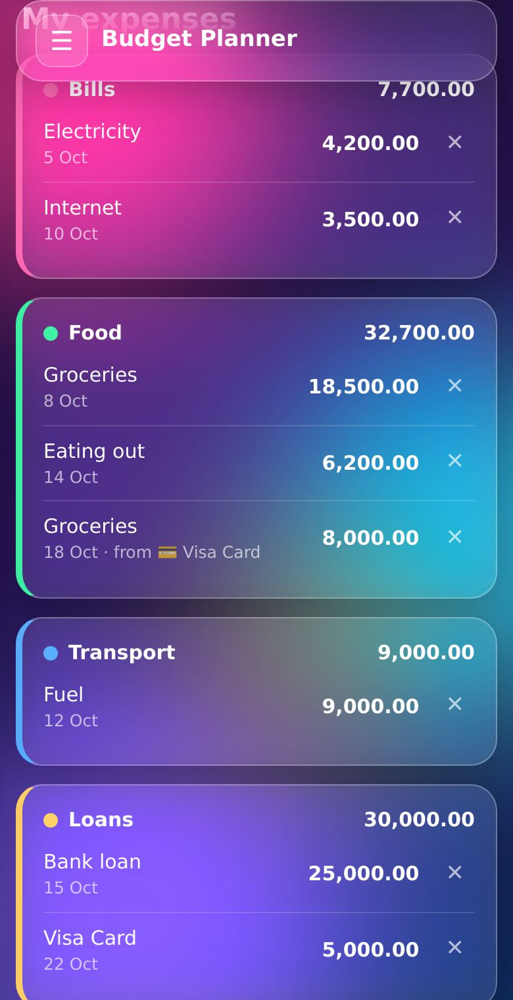
උඩ වම් කෙළවරේ ☰ click කරාම side panel එක open වෙනවා. මෙතනින්:
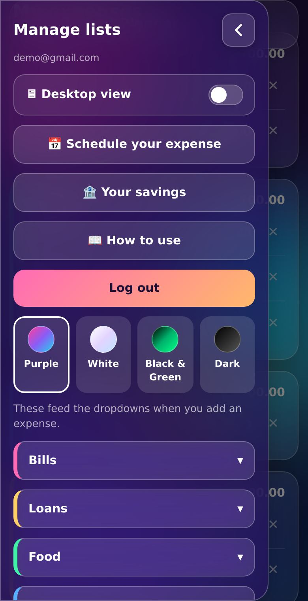
Side panel එකේ පහළ තියෙන හැම category බටන් එකක්ම click කරාම යටට විවෘත වෙනවා. එතන ඔයාට:
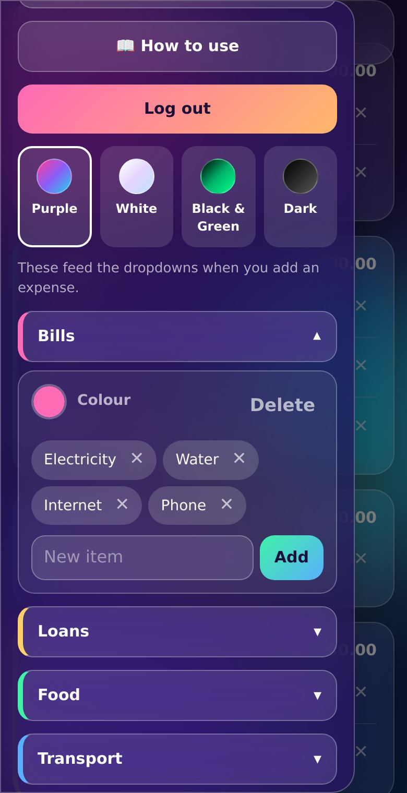
Internet bill එක, loan හිඟ වගේ හැම මාසෙම එකම දවසක යන වියදම් සෑම වතාවෙම manualy enter කරන්න ඕන නෑ.
ඒ දවස එනකොට, ඒ මාසයේ salary එක save කරලා නම්, වියදම Automatically ඔයාගේ list එකට add වෙනවා. පහළ ලිස්ට් එකෙන් ඒවා edit හෝ delete කරන්නත් පුලුවන්.
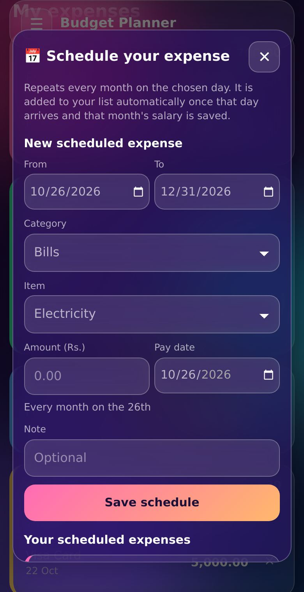
Side panel එකේ 🏦 Your savings එකෙන් දෙයාකාරයම add කරන්න පුලුවන්. උඩින් 🏦 Bank account හෝ 💳 Credit card තෝරන්න.
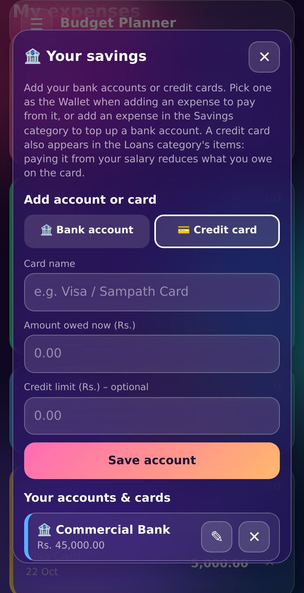
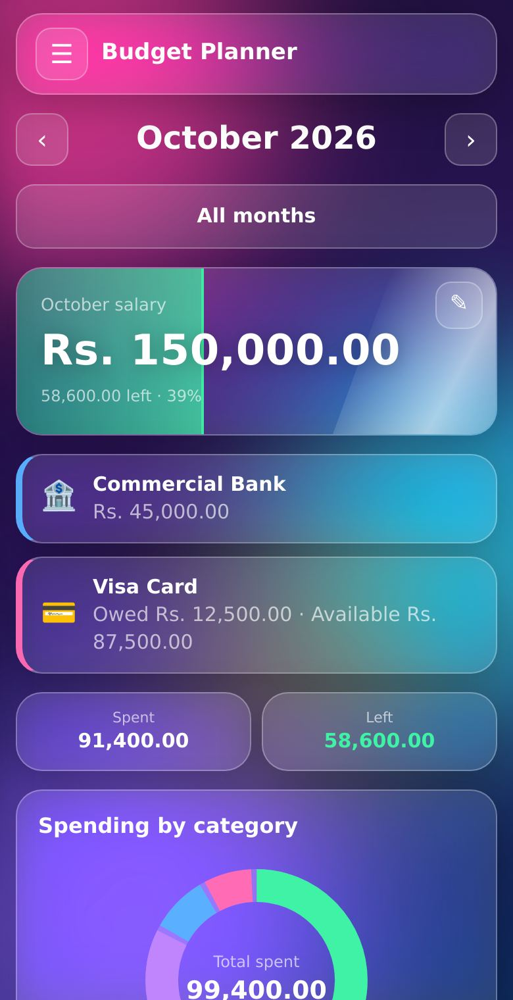
Side panel එකේ 🖥 Desktop view switch එක on කළාම විශාල තිරයට ගැලපෙන layout එකක් එනවා. වම්පස menu එක, අවුරුද්ද පුරා salary vs spent chart එක, category සහ දවස අනුව chart වගේ දේවල් එකවර පෙනෙනවා. ආපහු phone layout එකට යන්න වම් පහළ switch එක off කරන්න.
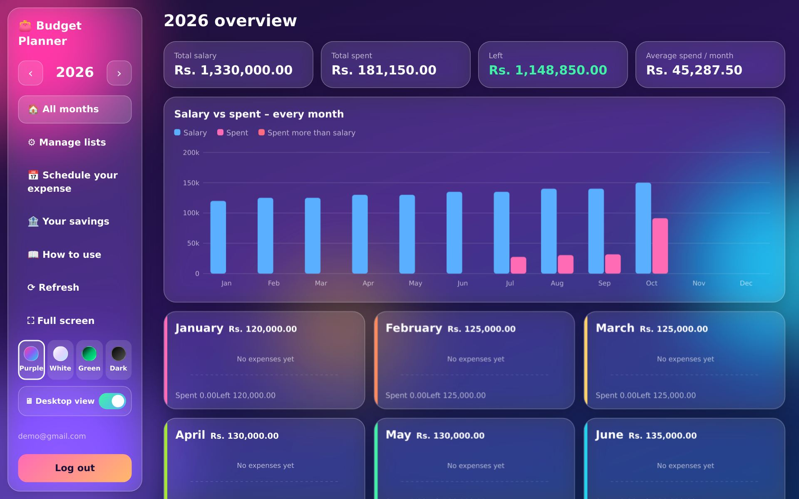
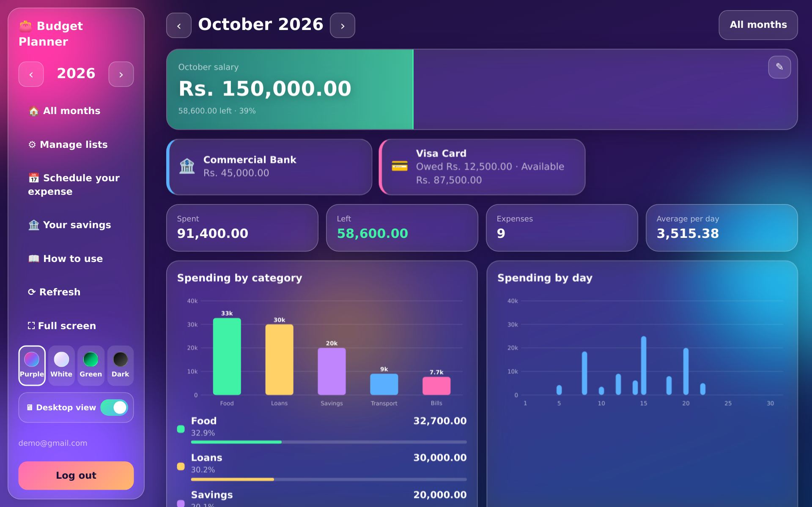
Phone එකේ නම් ඒ ගාන මත click කරාම අලුත් ගාන ඇතුලත් කරන්න පුලුවන්. Desktop view එකේ ✎ click කරාම category, item, ගාන, දිනය සියල්ලම වෙනස් කරන්න පුලුවන්. නැත්නම් ✕ එකෙන් මකලා ආයෙ දාන්න.
Salary card එකේ ✎ click කරාම ආයෙ ගාන ඇතුලත් කරල save කරන්න පුලුවන්.
අලුත් දත්ත save වෙන්න internet ඕන. Internet නැති වෙලාවට app එක ඇරුණාට දත්ත save වෙන්නේ නෑ, ඒ නිසා ගැහුවට පස්සේ "saved" කියලා පෙනෙනවද බලන්න.
Browser එකේ menu එකෙන් Add to Home screen (iPhone එකේ නම් Share › Add to Home Screen) තෝරන්න. එතකොට සාමාන්ය app එකක් වගේ open වෙනවා.
Side panel එකේ තියෙන Purple, White, Black & Green, Dark කියන ඒවායින් එකක් click කරාම ඒ ගමන්ම වෙනස් වෙනවා.
Your savings panel එකේ ඒ එක ඉස්සරහා ✕ click කරාම මැකෙනවා. කලින් දාපු වියදම් list එකේම තියෙනවා.